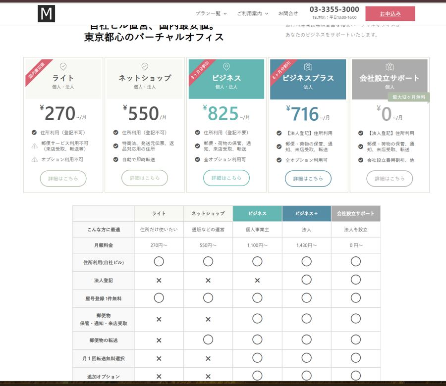

個人事業主・法人設立を考えたら最初に検討したい「住所」の話
個人事業主として開業する、あるいは法人を設立するとき、意外と後回しにされがちなのが「事業用の住所をどうするか」という問題です。自宅で開業する場合、屋号や法人の登記住所として自宅住所をそのまま使うと、名刺やホームページ、登記情報など公開される場所すべてに自宅の住所が載ってしまいます。
自宅住所を公開するリスク
特にネットショップや士業、コンサルティングのように顧客と直接対面しない業態では、自宅住所の公開がプライバシー面での不安につながりやすいという声がよく聞かれます。国税庁の登記関連情報も第三者が閲覧できる建て付けになっているため、法人登記の住所を自宅にすることに抵抗を感じる経営者は少なくありません。
バーチャルオフィスという選択肢
そこで検討されるのが「バーチャルオフィス」です。実際の執務スペースを借りずに、事業用の住所や郵便物の受け取り、法人登記の住所利用などのサービスだけを契約できる仕組みで、都心の一等地住所を低コストで使えることから、個人事業主やスタートアップの開業準備で広く使われています。賃貸オフィスを契約する場合と比べて初期費用・月額固定費を大幅に抑えられるため、売上が読みにくい開業初期の資金計画とも相性が良い選択肢です。
住所は「検索される」ことも意識する
事業用の住所は、単に郵便物を受け取るための情報ではありません。取引先が契約前に法人名や住所をインターネットで検索して確認する、いわゆる与信チェックの対象になることも珍しくありません。都心の一等地住所は、それだけで一定の信頼感を与える材料になり得るため、住所選びは見た目以上に事業の印象を左右する要素だと考えておくとよいでしょう。
METSバーチャルオフィスとは？特徴と料金プラン
METSバーチャルオフィスは、オリンピア興業株式会社が運営するバーチャルオフィスサービスです。最大の特徴は、賃貸物件を借りて転貸するのではなく自社ビル運営によって住所を提供している点で、これにより中間コストを抑えた料金設定を実現しています。公式サイトでは会員様継続率98%（直近1年）、不動産事業歴72年という実績も紹介されています。

出典: METSバーチャルオフィス公式サイト（vo-metsoffice.jp）トップページより
自社ビル運営だからできる格安料金
バーチャルオフィスは物件を借りて又貸しする形態が多い中、自社ビルで運営することで、敷金・保証金・年会費・更新費・解約金なし、保証人不要という条件を実現しているのが特徴です。一般的なバーチャルオフィスでは、運営会社自身も物件を賃借しているケースが多く、その分の賃料コストが月額料金に転嫁されやすい構造になっています。METSバーチャルオフィスはこの中間コストを自社ビル運営によって圧縮している点が、料金の安さの背景にあります。
新宿御苑・新宿三丁目・日本橋兜町の3拠点
METSバーチャルオフィスは、新宿御苑・新宿三丁目・日本橋兜町という東京都心3拠点で住所利用サービスを提供しています。新宿エリアはアパレル・美容・コンサルティングなど幅広い業種で「新宿」という地名のブランド力が名刺や登記情報の印象に影響しやすく、日本橋兜町は金融・投資関連業種との親和性が語られることが多いエリアです。事業内容によってどちらの住所が信頼感につながりやすいかを考えて選ぶのも一つの視点です。
5つのプラン比較
METSバーチャルオフィスには、利用目的に応じて5つのプランが用意されています。

出典: METSバーチャルオフィス公式サイト（vo-metsoffice.jp）プランページより
METSバーチャルオフィス｜プラン別の特徴
| プラン | 月額（税込） | 法人登記 | 郵便物対応 |
|---|---|---|---|
| ライト | 270円〜 | 不可 | 不可（来店受取・転送等） |
| ネットショップ | 550円〜 | 不可 | 自動即時転送のみ |
| ビジネス | 1,100円〜 | 登記不要で利用可 | 保管・通知・来店受取・転送に対応 |
| ビジネスプラス | 1,430円〜 | 法人登記に対応 | 保管・通知・来店受取・転送に対応 |
| 会社設立サポート | 0円〜 | 法人登記に対応 | 保管・通知・来店受取・転送に対応 |
※料金・条件は取材時点（2026年7月）のもので、キャンペーンにより変動する場合があります。最新情報は公式サイトでご確認ください。
※本記事は提携プログラム（アフィリエイト）を含みます。紹介内容は公式サイトの情報に基づいています。
プラン選びで迷う場合は、事業のフェーズで考えると整理しやすくなります。まず屋号だけで活動を始めたい段階であれば「ライト」や「ネットショップ」プランで十分なケースが多く、法人登記や郵便物対応まで含めて本格的に事業運営したい段階になったら「ビジネス」「ビジネスプラス」への切り替えを検討する、という段階的な進め方も可能です。「会社設立サポート」プランは、法人化のタイミングで住所と設立手続きの両方をまとめて相談したい場合に適しています。
開業準備で失敗しないための3つのチェックポイント
バーチャルオフィスを選ぶ際は、料金の安さだけで決めてしまうと後から「使いたい機能がなかった」となりがちです。契約前に必ず確認しておきたいポイントを整理します。
法人登記可否と屋号登録
個人事業主として屋号だけ使いたいのか、法人を設立してその住所で登記したいのかによって、選ぶべきプランは変わります。上表のように、METSバーチャルオフィスでは法人登記に対応したプランと対応していないプランが明確に分かれているため、開業形態に合わせて選ぶ必要があります。
郵便物対応・来店受取の有無
安価なプランでは郵便物の保管・転送に対応していないケースがあるため、取引先からの郵送物や行政からの通知をどう受け取るかは事前に確認しておくべきポイントです。転送頻度やオプション対応の可否も、実際の運用イメージに直結します。
契約期間・解約条件の確認
バーチャルオフィスは長期契約が前提のサービスもあれば、月単位で柔軟に契約・解約できるサービスもあります。開業してすぐは事業の見通しが立ちにくい時期でもあるため、最低契約期間や解約時の手続き、日割り精算の有無なども契約前に確認しておくと、事業計画の変更があった際にも対応しやすくなります。METSバーチャルオフィスのように敷金・保証金・解約金が明示的に0円とされているサービスは、この点での柔軟性を評価しやすい材料になります。
METSバーチャルオフィスがおすすめの人・向かない人
ここまでの内容を踏まえて、どのような事業者にMETSバーチャルオフィスが向いているか、逆にどのようなケースでは慎重に検討すべきかを整理します。
おすすめできるケース
自宅住所を公開せずに開業したい個人事業主、まずは屋号での活動から始めて将来的に法人化を視野に入れている方、法人設立時の登記住所をできるだけ低コストで確保したい方には、料金プランの選択肢が豊富なMETSバーチャルオフィスは検討価値があります。特にネットショップ運営者にとっては、特定商取引法上の表示に対応した住所利用ができるプランが用意されている点も実務上のメリットになります。
慎重に検討すべきケース
一方で、来客対応や打ち合わせスペースが日常的に必要な業態、実際の作業場所そのものを確保したい業種には、バーチャルオフィス単体では要件を満たせません。会議室利用がオプションとして用意されているかどうかも含めて、自社の業務スタイルに必要な機能が揃っているかを事前に確認することが重要です。また、許認可業種の中には事業所の実態確認が求められるものもあるため、開業予定の業種で住所利用のみのオフィスが許認可要件を満たすかどうかは、事前に管轄の窓口や専門家に確認しておくことをおすすめします。
よくある質問（Q&A）
METSバーチャルオフィスの契約を検討する際によく挙がる疑問を、公式サイトの情報をもとにQ&A形式でまとめました。契約前の最終チェックとして参考にしてください。
Q. バーチャルオフィスの住所で法人登記はできますか？
METSバーチャルオフィスの場合、プランによって法人登記への対応可否が分かれています。前述の比較表の通り、登記に対応したプランとそうでないプランが明確に分かれているため、法人設立を予定している場合は登記対応プランを選ぶ必要があります。
Q. 郵便物はどのように受け取れますか？
プランによって、来店での受取・定期転送・自動即時転送など対応方法が異なります。頻繁に郵便物を受け取る予定がある場合は、転送頻度やオプションの有無を確認したうえでプランを選ぶことをおすすめします。
Q. 個人事業主でも契約できますか？
個人・法人どちらでも契約可能なプランが用意されています。屋号登録が無料で付帯するプランもあるため、個人事業主として開業したばかりの段階でも利用しやすい設計になっています。
Q. 途中でプランを変更することはできますか？
事業の状況に応じてプランを見直したいケースは多くあります。屋号のみで始めた後に法人化したタイミングでプランを切り替える、といった段階的な使い方も想定されているため、まずは自社の現状に近いプランから始め、必要になった時点で上位プランへ切り替える進め方が現実的です。詳細な変更条件は契約前に公式サイトや問い合わせ窓口で確認しておくと安心です。
バーチャルオフィスと合わせて整えたいホームページ・会計の土台
住所の準備が整ったら、次に着手したいのがホームページと会計の仕組みです。以前の記事「個人事業主の開業準備チェックリスト」では、確定申告ソフトの選び方とあわせて、開業初期に整えるべき土台を解説しています。バーチャルオフィスの住所が決まったタイミングは、ホームページに正式な会社概要・所在地を掲載する良い機会でもあります。
ClawTechでは¥49,800からの低価格帯で、業種別のテンプレートをベースに最短1週間でホームページ・LP制作に対応しており、法人設立や開業と同時にオンライン上の「顔」を整えたい方をサポートしています。成約率を左右するホームページの作り方はこちらの記事でも詳しく解説しています。
また、バーチャルオフィスの住所を確定させたタイミングは、Googleビジネスプロフィールの登録・整備を検討する良い機会でもあります。業種によっては「近くで探す」検索行動からの流入も期待できるため、住所・ホームページ・Googleマップ表示の3点を連動させて整えておくと、開業初期の信頼構築がスムーズに進みます。ClawTechではMEO対策・Googleマップ集客の支援にも対応しています。
まとめ：METSバーチャルオフィスが向いている人
METSバーチャルオフィスは、自社ビル運営による格安料金と、法人登記対応プランの明確な設計が特徴のバーチャルオフィスです。自宅住所を公開したくない個人事業主、これから法人を設立する方、都心の住所をコストを抑えて使いたい方には検討する価値のある選択肢と言えます。一方で、実際の作業スペースが必要な業態には向かないため、自社の事業スタイルに合っているかを確認した上で契約を検討してください。
住所・会計・ホームページという開業準備の3つの土台は、どれも「後でまとめて整えよう」とすると負担が一気に増える領域です。バーチャルオフィスの検討を機に、他の土台についても優先順位を整理してみることをおすすめします。料金プランや対応内容は変更されることがあるため、契約前には必ず公式サイトで最新情報を確認したうえで、自社の事業計画に合ったプランを選んでください。
都心格安のバーチャルオフィス【METSバーチャルオフィス】
敷金・保証金・年会費・更新費・解約金０円、保証人不要。自社ビル運営ならではの料金でオフィスサービスを利用できます。
まずは無料診断から
30秒の質問に答えるだけで、貴社のDX成熟度と次の一手がわかります。法人設立・開業準備に関するご相談も承っています。
30秒でわかる 無料DX診断 → 無料相談・お見積もりはこちら→